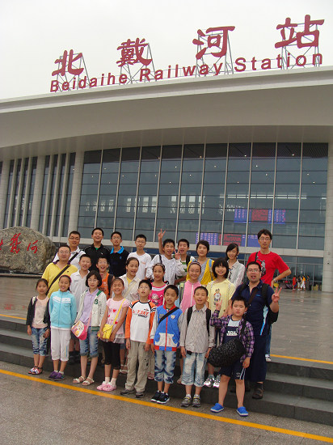
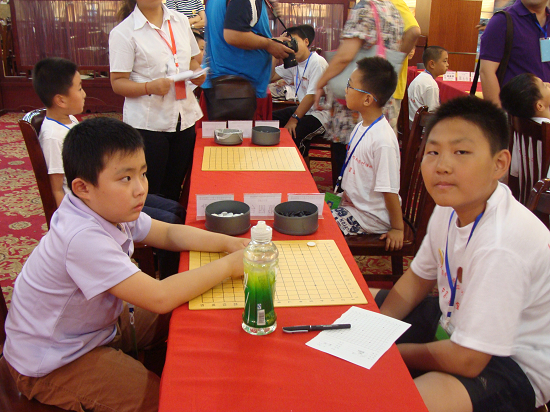
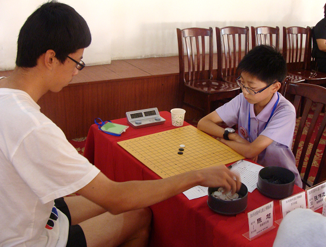
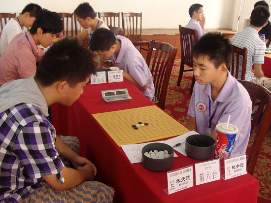
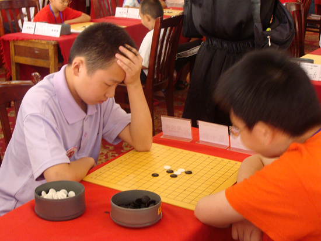
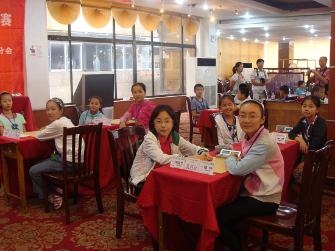
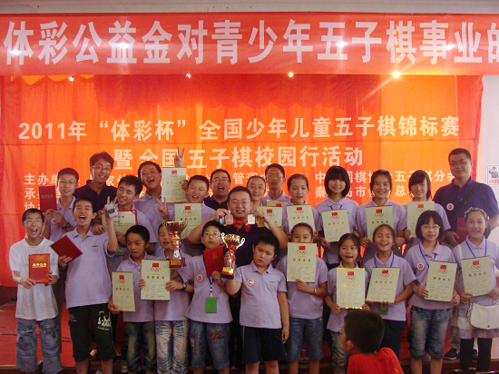
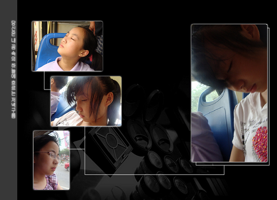

19个小时的火车，我们终于到了秦皇岛，每人一碗鸡蛋面，继续赶路去赛场。
11点办完所有入住手续，下午1点半就开始比赛




苦战开始了，特别是少年组中，感觉浙江的孙嘉弘和南通的选手年龄相仿，其余的都觉得好大。

这是最开心的一轮，女儿前四台，除了郑逸宁，其余七个全是南通选手，且最后全部进入前八，当然郑逸宁从南通的烽火线中杀出重围取得第二，实力真的超强。

此次南通共计21人组队参加四个组别的比赛，最终15名选手取得名次奖，共计获得一金两银一铜的个人，团体第二和第三的成绩。

下午带孩子们出去转转，结果坐在汽车上，就睡着了。我知道他们真的很累！
［ 清风明月月 于 2011-7-29 9:11:29 时花20金币送鲜花一朵］